UE3 Virologie — Hépatites virales A · B · C · D · E
D'après le cours Dr Ségolène Brichler (Microbiologie Clinique, CHU Avicenne — DFGSM3, 10 juin 2026, parties 1 & 2). Pivots : point-clé / piège · diagnostic · vaccin / traitement · seuil / condition. Figures du cours intégrées.
Partie 1 · Généralités sur les hépatites
1 · Le foie & la définition de l'hépatite
Vascularisation & fonctions
Sang oxygéné = artère hépatique ; sang du tube digestif = veine porte ; sortie = veines hépatiques → veine cave inférieure.
Fonctions : synthèse protéique (90 % des protéines plasmatiques) · métabolisme glucides/lipides · détoxification (médicaments, bilirubine) · sécrétion de la bile.
Définition
Hépatite = inflammation du foie → cytolyse hépatique.
Marqueur biologique : élévation des transaminases ALAT & ASAT (d'abord ALAT, puis « switch » possible des ASAT).
Seuil 6 mois : > 6 mois = hépatite chronique.
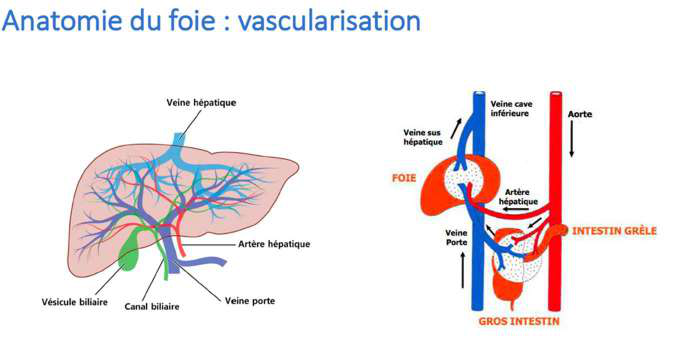
Vascularisation hépatique — double afférence : artère hépatique (sang oxygéné) + veine porte (sang du tube digestif) ; drainage par les veines hépatiques vers la VCI. Architecture des lobules non détaillée (rappel d'hépatologie).
2 · Physiopathologie : aiguë vs chronique (mécanisme immuno-médié)
🔑 Point capital : la cytolyse n'est pas due au virus lui-même (virus non cytopathogènes) mais à la réponse immunitaire dirigée contre les hépatocytes infectés.
Type
Nécrose
Inflammation / fibrose
Évolution
Hépatite aiguë
Nécrose massive d'un grand nombre d'hépatocytes (en une fois)
Pas d'inflammation, pas de fibrose
Régénération → foie normal en quelques jours à mois
Hépatocyte infecté → protéines virales présentées aux cellules dendritiques (CPA) → maturation → activation des LT CD4 helper.
→ recrutement cellulaire (CD8, NK) qui lysent les hépatocytes infectés = immunité cellulaire.
Les CD4 activent les LB → anticorps neutralisants des particules circulantes = immunité humorale.
Couple cellulaire + humorale → arrêt de l'infection de nouveaux hépatocytes + régénération.
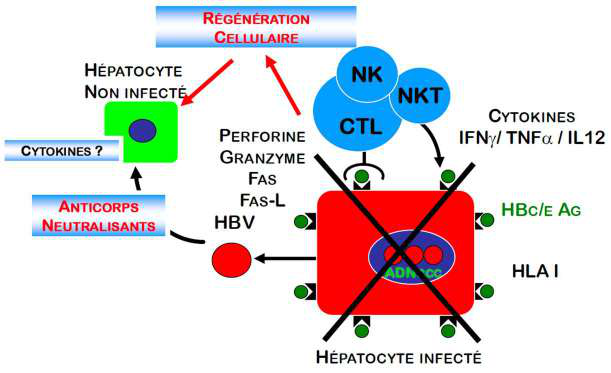
Mécanisme immuno-médié — l'hépatocyte infecté présente les antigènes viraux ; la réponse cellulaire (CD8/NK) détruit les hépatocytes infectés (= cytolyse → ↑ transaminases) tandis que la réponse humorale (Ac) neutralise les particules circulantes. ⇒ la destruction du foie est le prix de la défense immunitaire, pas un effet direct du virus.
3 · Causes, fibrose (METAVIR) & épidémiologie
Causes d'hépatite (≠ virales seulement)
Infectieuses : virus A à E, mais aussi herpès, dengue, VIH, paludisme, toxoplasmose…
Médicamenteuse · toxique · alcoolique · ischémique · maladie de Wilson (surcharge en cuivre).
Les hépatites virales ne sont PAS la 1ʳᵉ cause, mais doivent être systématiquement recherchées devant une cytolyse.
Les virus A–E ont un tropisme hépatique exclusif.
Score METAVIR (fibrose)
4 stades : F1 → F2 → F3 → F4 = cirrhose (destruction de l'architecture, ponts fibreux désorganisant les lobules). Processus commun à toutes les maladies du foie → toujours rechercher les autres causes.
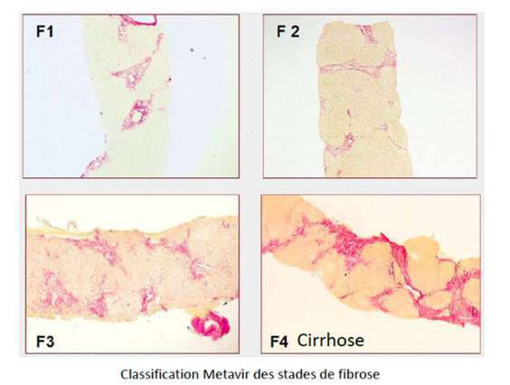
Score METAVIR (F1→F4) — progression histologique de la fibrose : septa de plus en plus nombreux jusqu'au F4 = cirrhose (nodules délimités par des ponts fibreux, architecture lobulaire détruite).
📊 Mortalité mondiale (2015) : 1,34 million de décès/an, dont 96 % imputables aux hépatites B, C et Delta (décès par cirrhose, complications, cancer du foie). Très peu de décès par hépatite aiguë (sauf A et E fulminantes).
4 · Les virus des hépatites A à E — points communs & différences
Points communs
Tropisme hépatocytaire.
Physiopathologie similaire : non cytolytiques (c'est l'immunité qui détruit).
Grande fréquence des formes asymptomatiques (aiguë comme chronique) → importance du dépistage systématique.
Différences
Le cycle viral.
Transmission : entérique (virus nus : A, E) vs parentérale (virus enveloppés : B, C, D).
Réservoirs (humain strict vs animal).
Traitements et vaccins différents.
🔑 Clé de lecture des 5 virus : organiser par transmission. A & E = virus nus, féco-oral, hépatite aiguë (pas de chronicité — sauf VHE de l'immunodéprimé). B, C, D = virus enveloppés, parentéral/sexuel, risque de chronicité → cirrhose / cancer.
Partie 2 · Hépatite B (VHB) & hépatite Delta (VHD)
5 · VHB — particule virale & génome
Famille Hepadnaviridae (hepa- = foie, dna- = ADN) → virus à ADN à tropisme hépatique.
Microscopie électronique = 3 particules : particule de Dane (= infectieuse) · particule filamenteuse · particule sphérique.
🪤 Leurre immunitaire : l'hépatocyte fabrique des enveloppes vides (× 1000 vs besoins) = particules filamenteuses/sphériques. L'organisme est saturé d'AgHBs → les anti-HBs neutralisent les enveloppes vides au lieu des virions → épuisement de l'immunité humorale.
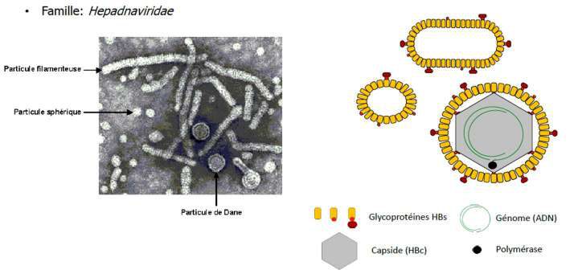
Les 3 particules du VHB en ME — seule la particule de Dane (complète : enveloppe HBs + capside HBc + ADN) est infectieuse ; les particules filamenteuses et sphériques sont des enveloppes vides produites en excès (leurre immunitaire).
Organisation du génome (4 gènes chevauchants)
Gène
Produit
Rôle
HBs
protéine d'enveloppe (surface)
cible du vaccin · enveloppes vides
HBc
capside
structurale
HBe
protéine non structurale sécrétée
sature le système immunitaire (marqueur de réplication)
Pol
polymérase = reverse transcriptase
réplication (seuls VHB & VIH ont une RT)
HBx
protéine non structurale
perturbe STAT/TNF/TGF-β → oncogène
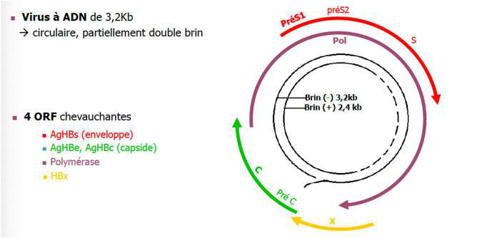
Génome VHB — petit ADN circulaire, partiellement double brin (3,2 kb) à cadres de lecture chevauchants codant HBs, HBc, HBe, polymérase (RT) et HBx.
6 · VHB — cycle viral & ADNccc
Entrée par le récepteur NTCP (récepteur des acides biliaires), reconnu par HBs.
Dans le noyau, l'ADN circulaire devient l'ADNccc (ADN circulaire covalent clos) : ADN épisomal recrutant des histones = mini-chromosome persistant, transmis aux hépatocytes fils.
→ On ne se débarrasse jamais vraiment du VHB : réactivation possible en immunodépression.
L'ADN peut s'intégrer au génome cellulaire → cancer possible chez le sujet jeune sans passer par cirrhose.
Réplication : ARN pré-génomique → la reverse transcriptase le rétro-transcrit en ADN → assemblage.
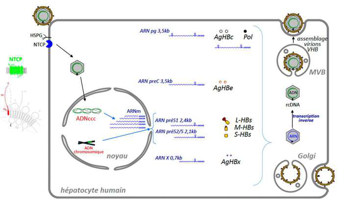
Cycle du VHB — entrée via NTCP → formation de l'ADNccc nucléaire (réservoir persistant) → transcription d'ARNm + d'un ARN pré-génomique → traduction (HBs/HBc/HBe/HBx) → la RT reconvertit l'ARN pré-génomique en ADN → assemblage et sortie (virions + enveloppes vides). L'ADNccc et l'intégration expliquent persistance et oncogenèse.
7 · VHD — virus satellite du VHB
Décrit en 1977 ; famille Kolmioviridae (« kolmio » = triangle).
Génome = ARN circulaire simple brin négatif, 1 600 bases, 1 seul gène (protéines delta p24/p27) → le plus petit génome de virus humain.
Ne code pas d'enveloppe → besoin de l'enveloppe HBs du VHB : VHD = satellite du VHB (le VHB est « auxiliaire »).
Pas de reverse transcriptase (seuls VHB & VIH en ont). Réplication en cercle roulant : l'ARN polymérase II cellulaire est leurrée (transcrit de l'ARN en croyant de l'ADN).
Infection abortive : si le VHD entre sans VHB (pas d'ADNccc → pas d'HBs) → cycle commencé mais sans persistance.
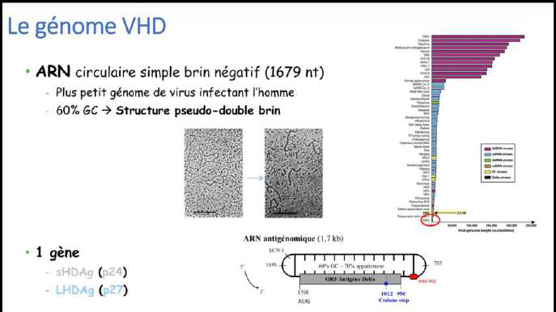
VHD — minuscule ARN circulaire sb (−) enveloppé par les HBs du VHB ; entrée via NTCP, réplication nucléaire « en cercle roulant » par l'ARN pol II détournée. Sans VHB (pas d'HBs), le cycle n'aboutit pas.
🔑 Le VHD est TOUJOURS accompagné du VHB, mais l'inverse est faux : 95 % des porteurs du VHB n'ont pas de delta.
8 · Transmission VHB & VHD
Parentérale (voie principale) : transfusion, hémodialyse, AES, usage de drogue IV, tatouage, piercing.
Horizontale (surtout VHB, dans l'enfance, contact familial) → charge virale jusqu'à 10⁹ → vacciner +++.
Verticale (mère-enfant) : surtout VHB (moins VHD) → la prévention VHB limite le delta par cette voie.
Sexuelle et personne-à-personne également.
La résolution OU la vaccination de l'hépatite B (→ anti-HBs +) protège aussi contre l'hépatite delta. D'où l'importance de dépister les mères (l'enfant est vacciné dès la naissance).
Chronicité ≈ 100 % (tolérance immunitaire néonatale : AgHBe/HBs perçus comme « du soi »)
≈ 250 millions de porteurs chroniques (surtout régions endémiques, Afrique subsaharienne) ; 15–25 % mourront des complications.
Phases de l'hépatite B chronique
1ʳᵉ phase : réplication + SI inactif = infection mais PAS hépatite (transaminases normales).
2ᵉ phase : réplication maîtrisée par le SI mais non résolue (à bas bruit).
Phases « guerre totale » : équilibre fluctuant virus/SI sur des années → hépatite, fibrose, régénération en alternance.
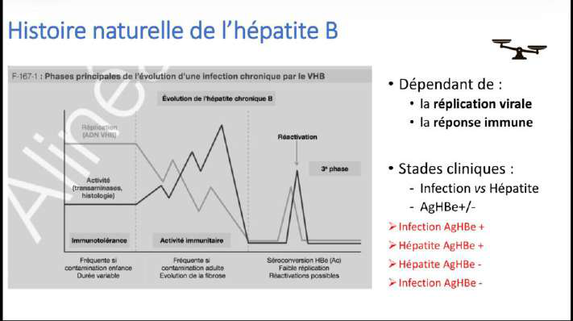
Histoire naturelle de l'hépatite B — l'évolution dépend de l'équilibre virus ↔ immunité : des phases d'« infection » sans hépatite alternent avec des phases d'« hépatite active » (cytolyse, fibrogenèse) pouvant aboutir à la cirrhose puis l'hépatocarcinome.
Co-infection vs surinfection delta
Co-infection
Surinfection
Définition
VHB + VHD en même temps
VHD chez un porteur chronique d'AgHBs
Évolution
Grosse hépatite aiguë possible, mais résolution des 2 dans la majorité (SI compétent)
Passage en hépatite B-Delta chronique → cirrhose → cancer, plus rapide (SI déjà défaillant)
⚠️ L'hépatite delta = la plus sévère des hépatites virales chroniques → dépister le VHD chez tout porteur chronique du VHB.
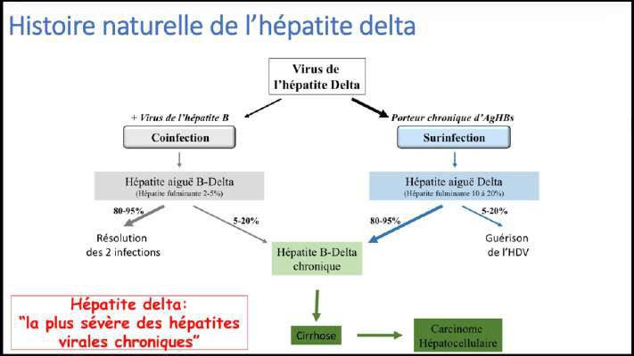
Co-infection (simultanée) vs surinfection (delta sur VHB chronique) — la surinfection est la situation grave : évolution chronique B+D rapide vers cirrhose/cancer.
10 · Épidémiologie & diagnostic à 3 marqueurs
1/3 de la population mondiale a été exposée au VHB ; prévalence surtout Afrique subsaharienne.
Carte VHD beaucoup moins fiable (~5 % des porteurs chroniques VHB, grandes variations régionales).
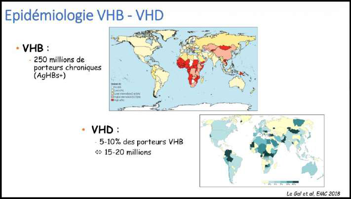
Prévalence mondiale du VHB = % d'AgHBs+ > 6 mois (portage chronique). Forte en Afrique subsaharienne et Asie ; conditionne l'âge de contamination (donc le risque de chronicité).
Marqueurs directs vs indirects
Directs (composants du virus)
Indirects (anticorps)
AgHBs, ADN viral, AgHBe
anti-HBs, anti-HBc, anti-HBe
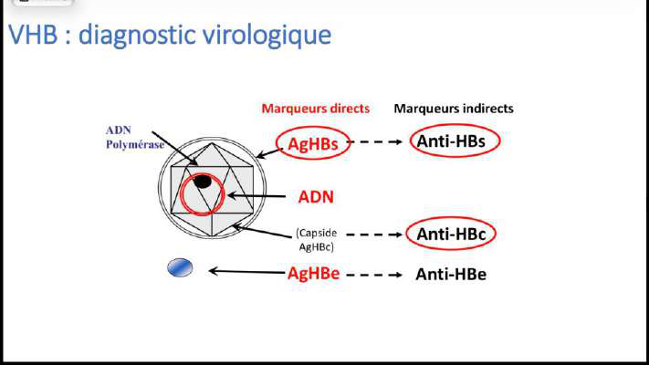
Diagnostic virologique VHB — marqueurs directs (Ag/ADN, à gauche) vs indirects (anticorps, à droite). Les 3 marqueurs de dépistage remboursés : AgHBs · anti-HBs · anti-HBc.
🔑 Interprétation du dépistage 3 marqueurs :
AgHBs + → infection en cours (test réflexe IgM anti-HBc : si IgM − → hépatite chronique dans 95 % des cas, à stadifier : HBe, delta…).
anti-HBs + isolé → vacciné (le vaccin = AgHBs).
anti-HBc + / AgHBs − → contact ancien : dans 95 % protégé, mais ADNccc persistant → réactivation possible si immunodépression.
Les anti-HBs varient beaucoup (mauvais repère de la réponse immunitaire).
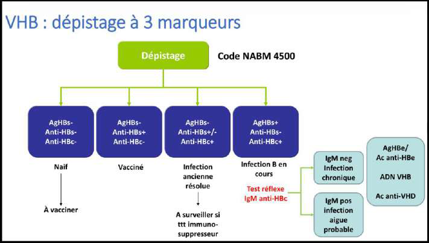
Dépistage à 3 marqueurs — le croisement AgHBs / anti-HBs / anti-HBc distingue : infection active, immunité vaccinale (anti-HBs isolé), infection ancienne résolue (anti-HBc + sans AgHBs), sujet naïf.
11 · Vaccination & traitement (VHB / VHD)
Vaccination anti-VHB (= anti-VHD)
Le vaccin = AgHBs produit par génie génétique (gène inséré dans une levure → AgHBs recombinant).
Schéma : 3 doses J0 – M1 – M6.
Obligatoire : tous les professionnels de santé ; tous les nourrissons depuis 2018.
Mère VHB chronique → sérovaccination du nouveau-né dès la naissance : vaccin dans une fesse + immunoglobulines anti-HBs dans l'autre.
Le vaccin VHB protège aussi du VHD (mais ne protège pas un porteur chronique d'une surinfection).
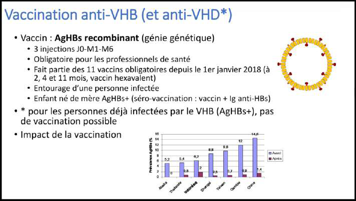
Vaccination anti-VHB — antigène HBs recombinant, 3 doses (J0/M1/M6). Pilier de la prévention : bloque aussi le VHD (qui dépend de l'HBs).
Traitement de l'hépatite B chronique
Peg-interféron alpha.
Inhibiteurs nucléos(t)idiques de la polymérase (traitement principal) : Ténofovir (aussi anti-VIH), Entécavir.
Circule associé aux HDL/LDL et apolipoprotéines (protection/déplacement).
Grande diversité génétique : ARN-polymérase ARN-dépendante sans relecture → beaucoup d'erreurs (→ pas de vaccin).
1 seul cadre de lecture → polyprotéine clivée par des protéases.
3 enzymes virales à retenir
NS3 = protéase (clive la polyprotéine).
NS5B = polymérase (ARN-pol ARN-dép).
NS5A = cofacteur indispensable de la polymérase.
Ces 3 enzymes = les cibles des antiviraux à action directe (AAD).
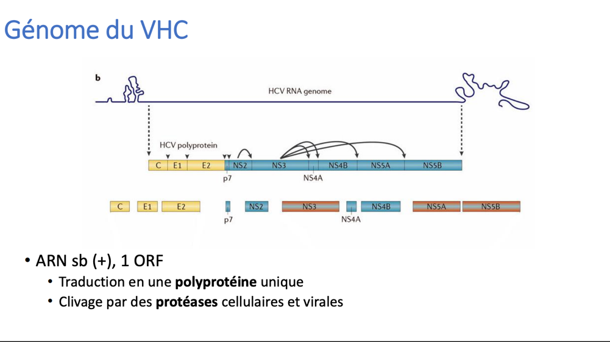
Génome du VHC — un seul ORF → polyprotéine : à gauche les structurales (capside C, enveloppe E1/E2), à droite les non structurales dont NS3 (protéase), NS5A (cofacteur), NS5B (polymérase) = cibles des AAD.
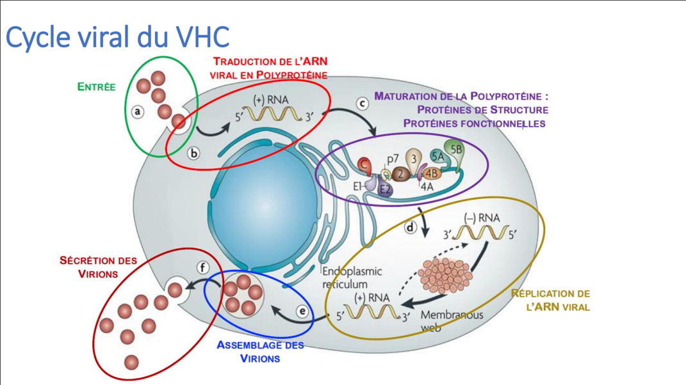
Cycle du VHC — entrée par E1/E2 ; tout se passe dans le cytoplasme (pas de passage nucléaire) : l'ARN (+) est traduit d'emblée en polyprotéine → clivage par protéases → réplication par NS5B (erreurs → diversité) → assemblage et bourgeonnement.
Histoire naturelle
Transmission parentérale sanguine (toxicomanie IV, transfusion, soins/tatouages non stériles ; rapport anal possible).
Histoire naturelle du VHC — après l'aiguë (souvent muette), ≈ 20–25 % guérissent spontanément, ≈ 80 % passent à la chronicité → fibrose → cirrhose → carcinome.
🔬 Diagnostic (facile) : sérologie Ac anti-VHC (reste positive à vie). Si + → PCR ARN VHC pour trancher : PCR + = infection active (indication de traitement à 100 %) ; PCR − = guérison spontanée / infection ancienne. Reflex testing 2026 : PCR faite d'emblée si sérologie +.
Traitement : depuis 2013, antiviraux à action directe (AAD) = inhibiteurs de NS3 / NS5A / NS5B → guérison > 95 %. (≈ 71 millions d'infections actives dans le monde.)
Partie 4 · Hépatites A (VHA) & E (VHE) — virus entériques
VHA = Picornaviridae (genre Hepatovirus) : 6 génotypes mais 1 seul sérotype → une infection immunise à vie.
VHE = Hepeviridae : 4 génotypes → 2 profils (HEV 1/2 vs HEV 3/4).
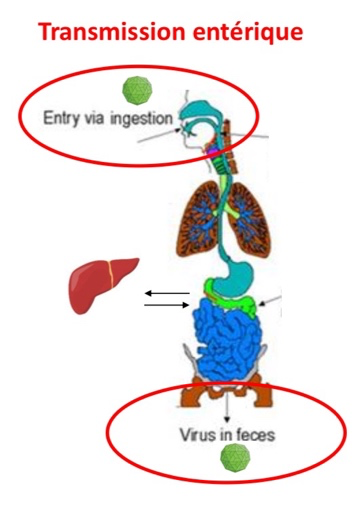
Transmission entérique — entrée par ingestion (eau/aliments contaminés), réplication, puis excrétion dans les selles (virus nus, résistants dans le milieu extérieur). Commun au VHA et au VHE.
Transmission du VHE — HEV 1/2 par l'eau (épidémies des pays à péril fécal) ; HEV 3/4 = zoonose par viande de porc mal cuite (Europe). En France, on déclare ~3× plus de VHA que de VHE.
⚠️ Formes fulminantes : possibles dans le VHA et le VHE 1/2, surtout VHE chez la femme enceinte (gravité ++). Chronicité du VHE 3/4 possible chez l'immunodéprimé. Sinon : VHA → 100 % de guérison si pas de fulminante.
Diagnostic
Cytolyse aiguë → IgM anti-VHA (+ = hépatite A aiguë) ; bilan pré-vaccinal = IgG anti-VHA (immunité ancienne).
VHE : sérologie + PCR selon le contexte.
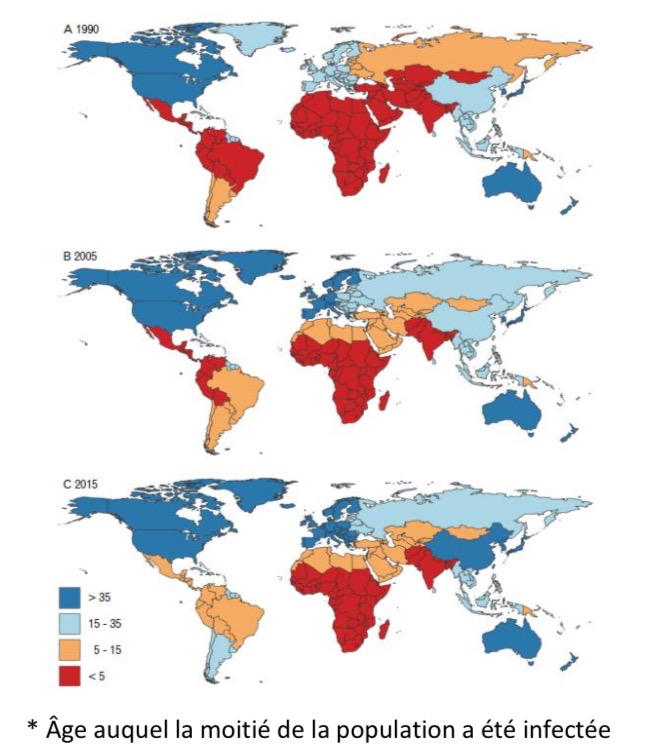
Répartition mondiale du VHA — endémicité liée au niveau d'hygiène. Plus l'endémie baisse, plus l'âge moyen d'infection augmente → davantage de formes symptomatiques (plus graves chez l'adulte). (* = âge auquel la moitié de la population a été infectée.)
Vaccination VHA (selon la zone)
Vaccin VHA = inactivé (≠ VHE) ; ⚠️ si délai trop long entre 1ʳᵉ et 2ᵉ dose → recommencer le schéma.
Groupes à risque : voyageurs (zone d'endémie), soignants, HSH, post-exposition (entourage d'un cas, dans les 15 j), hépatopathes, métiers de la restauration.
VHE : 1 vaccin (HEV 239) disponible en Chine seulement, pas de reco en France.
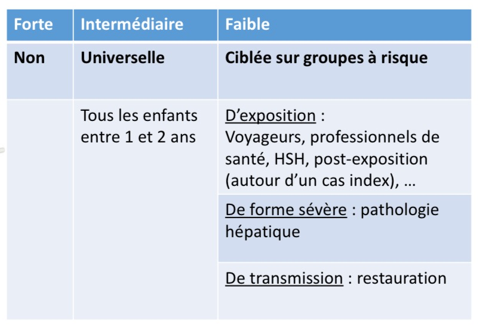
Stratégie vaccinale VHA — zones rouges (forte endémie) : inutile de vacciner (immunité acquise tôt) ; zones bleues (faible) : vacciner les groupes à risque ; zones orange (intermédiaires) : idéalement tout le monde.